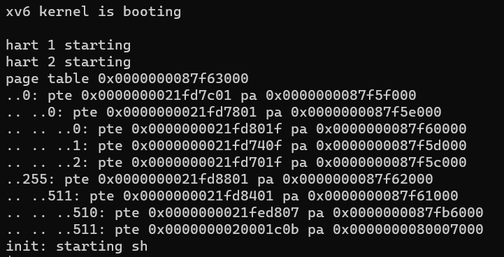
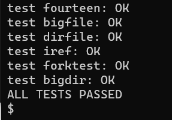
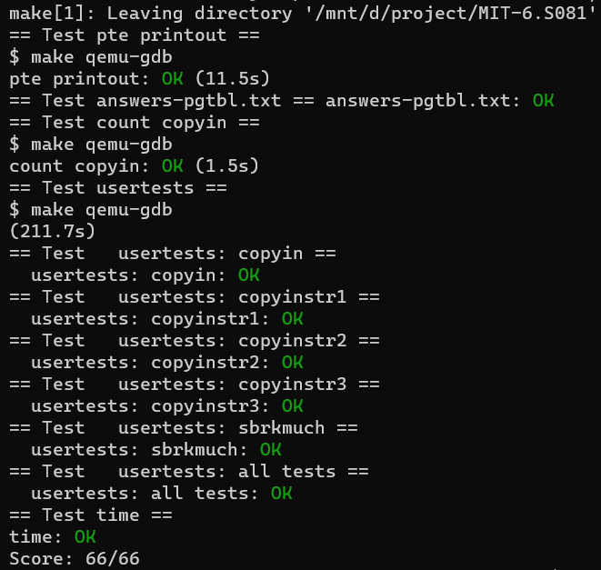

lab3: pgtbl
1. Print a page table
本实验主要是实现一个打印页表内容的函数， 首先根据提示在exec.c中的return argc之前插入if(p->pid==1) vmprint(p->pagetable)
然后看一下kernel/vm.c里面的freewalk方法，主要的代码如下：
// Recursively free page-table pages.
// All leaf mappings must already have been removed.
void
freewalk(pagetable_t pagetable)
{
// there are 2^9 = 512 PTEs in a page table.
for(int i = 0; i < 512; i++){
pte_t pte = pagetable[i];
if((pte & PTE_V) && (pte & (PTE_R|PTE_W|PTE_X)) == 0){
// this PTE points to a lower-level page table.
uint64 child = PTE2PA(pte);
freewalk((pagetable_t)child);
pagetable[i] = 0;
} else if(pte & PTE_V){
panic("freewalk: leaf");
}
}
kfree((void*)pagetable);
}
它首先会遍历整个页表。当遇到有效的页表项并且不在最后一层的时候，它会递归调用。PTE_V是用来判断页表项是否有效，而(pte & (PTE_R|PTE_W|PTE_X)) == 0则是用来判断是否不在最后一层。因为最后一层页表中页表项中W位，R位，X位起码有一位会被设置为1。注释里面说所有最后一层的页表项已经被释放了，所以遇到不符合的情况就panic("freewalk: leaf")。
那么，根据freewalk，我们可以写下递归函数。对于每一个有效的页表项都打印其和其子项的内容。如果不是最后一层的页表就继续递归。通过level来控制前缀..的数量。
/**
* @param pagetable 所要打印的页表
* @param level 页表的层级
*/
void
_vmprint(pagetable_t pagetable, int level){
// there are 2^9 = 512 PTEs in a page table.
for(int i = 0; i < 512; i++){
pte_t pte = pagetable[i];
// PTE_V is a flag for whether the page table is valid
if(pte & PTE_V){
for (int j = 0; j < level; j++){
if (j) printf(" ");
printf("..");
}
uint64 child = PTE2PA(pte);
printf("%d: pte %p pa %p\n", i, pte, child);
if((pte & (PTE_R|PTE_W|PTE_X)) == 0){
// this PTE points to a lower-level page table.
_vmprint((pagetable_t)child, level + 1);
}
}
}
}
/**
* @brief vmprint 打印页表
* @param pagetable 所要打印的页表
*/
void
vmprint(pagetable_t pagetable){
printf("page table %p\n", pagetable);
_vmprint(pagetable, 1);
}
最后记得加到kernel/defs.h里面。
int copyin(pagetable_t, char *, uint64, uint64);
int copyinstr(pagetable_t, char *, uint64, uint64);
void vmprint(pagetable_t);
重新跑一下make qemu，可以看到下面的输出：

2. A kernel page table per process
本实验主要是让每个进程都有自己的内核页表，这样在内核中执行时使用它自己的内核页表的副本。
(1). 首先给kernel/proc.h里面的struct proc加上内核页表的字段。
uint64 kstack; // Virtual address of kernel stack
uint64 sz; // Size of process memory (bytes)
pagetable_t pagetable; // User page table
pagetable_t kernelpt; // 进程的内核页表
struct trapframe *trapframe; // data page for trampoline.S
(2). 在vm.c中添加新的方法proc_kpt_init，该方法用于在allocproc 中初始化进程的内核页表。这个函数还需要一个辅助函数uvmmap，该函数和kvmmap方法几乎一致，不同的是kvmmap是对Xv6的内核页表进行映射，而uvmmap将用于进程的内核页表进行映射。
// Just follow the kvmmap on vm.c
void
uvmmap(pagetable_t pagetable, uint64 va, uint64 pa, uint64 sz, int perm)
{
if(mappages(pagetable, va, sz, pa, perm) != 0)
panic("uvmmap");
}
// Create a kernel page table for the process
pagetable_t
proc_kpt_init(){
pagetable_t kernelpt = uvmcreate();
if (kernelpt == 0) return 0;
uvmmap(kernelpt, UART0, UART0, PGSIZE, PTE_R | PTE_W);
uvmmap(kernelpt, VIRTIO0, VIRTIO0, PGSIZE, PTE_R | PTE_W);
uvmmap(kernelpt, CLINT, CLINT, 0x10000, PTE_R | PTE_W);
uvmmap(kernelpt, PLIC, PLIC, 0x400000, PTE_R | PTE_W);
uvmmap(kernelpt, KERNBASE, KERNBASE, (uint64)etext-KERNBASE, PTE_R | PTE_X);
uvmmap(kernelpt, (uint64)etext, (uint64)etext, PHYSTOP-(uint64)etext, PTE_R | PTE_W);
uvmmap(kernelpt, TRAMPOLINE, (uint64)trampoline, PGSIZE, PTE_R | PTE_X);
return kernelpt;
}
然后在kernel/proc.c里面的allocproc调用。
...
// An empty user page table.
p->pagetable = proc_pagetable(p);
if(p->pagetable == 0){
freeproc(p);
release(&p->lock);
return 0;
}
// Init the kernal page table
p->kernelpt = proc_kpt_init();
if(p->kernelpt == 0){
freeproc(p);
release(&p->lock);
return 0;
}
...
(3). 根据提示，为了确保每一个进程的内核页表都关于该进程的内核栈有一个映射。我们需要将procinit方法中相关的代码迁移到allocproc方法中。很明显就是下面这段代码，将其剪切到上述内核页表初始化的代码后。
// Allocate a page for the process's kernel stack.
// Map it high in memory, followed by an invalid
// guard page.
char *pa = kalloc();
if(pa == 0)
panic("kalloc");
uint64 va = KSTACK((int) (p - proc));
uvmmap(p->kernelpt, va, (uint64)pa, PGSIZE, PTE_R | PTE_W);
p->kstack = va;
(4). 我们需要修改scheduler()来加载进程的内核页表到SATP寄存器。提示里面请求阅读kvminithart()。
// Switch h/w page table register to the kernel's page table,
// and enable paging.
void
kvminithart()
{
w_satp(MAKE_SATP(kernel_pagetable));
sfence_vma();
}
kvminithart是用于原先的内核页表，我们将进程的内核页表传进去就可以。在vm.c里面添加一个新方法proc_inithart。
// Store kernel page table to SATP register
void
proc_inithart(pagetable_t kpt){
w_satp(MAKE_SATP(kpt));
sfence_vma();
}
然后在scheduler()内调用即可，但在结束的时候，需要切换回原先的kernel_pagetable。直接调用调用上面的kvminithart()就能把Xv6的内核页表加载回去。
...
p->state = RUNNING;
c->proc = p;
// Store the kernal page table into the SATP
proc_inithart(p->kernelpt);
swtch(&c->context, &p->context);
// Come back to the global kernel page table
kvminithart();
...
(5). 在freeproc中释放一个进程的内核页表。首先释放页表内的内核栈，调用uvmunmap可以解除映射，最后的一个参数（do_free）为一的时候，会释放实际内存。
// free the kernel stack in the RAM
uvmunmap(p->kernelpt, p->kstack, 1, 1);
p->kstack = 0;
然后释放进程的内核页表，先在kernel/proc.c里面添加一个方法proc_freekernelpt。如下，历遍整个内核页表，然后将所有有效的页表项清空为零。如果这个页表项不在最后一层的页表上，需要继续进行递归。
void
proc_freekernelpt(pagetable_t kernelpt)
{
// similar to the freewalk method
// there are 2^9 = 512 PTEs in a page table.
for(int i = 0; i < 512; i++){
pte_t pte = kernelpt[i];
if(pte & PTE_V){
kernelpt[i] = 0;
if ((pte & (PTE_R|PTE_W|PTE_X)) == 0){
uint64 child = PTE2PA(pte);
proc_freekernelpt((pagetable_t)child);
}
}
}
kfree((void*)kernelpt);
}
(6). 将需要的函数定义添加到 kernel/defs.h 中
// vm.c
void kvminit(void);
pagetable_t proc_kpt_init(void); // 用于内核页表的初始化
void kvminithart(void);
void proc_inithart(pagetable_t); // 将进程的内核页表保存到SATP寄存器
...
(7). 修改vm.c中的kvmpa，将原先的kernel_pagetable改成myproc()->kernelpt，使用进程的内核页表。
#include "spinlock.h"
#include "proc.h"
uint64
kvmpa(uint64 va)
{
uint64 off = va % PGSIZE;
pte_t *pte;
uint64 pa;
pte = walk(myproc()->kernelpt, va, 0); // 修改这里
if(pte == 0)
panic("kvmpa");
if((*pte & PTE_V) == 0)
panic("kvmpa");
pa = PTE2PA(*pte);
return pa+off;
}
(8). 测试一下我们的代码，先跑起qemu，然后跑一下usertests。这部分耗时会比较长。
$ make qemu
> usertests
得到以下输出：

3. Simplify copyin/copyinstr
本实验是实现将用户空间的映射添加到每个进程的内核页表，将进程的页表复制一份到进程的内核页表就好。
首先添加复制函数。需要注意的是，在内核模式下，无法访问设置了PTE_U的页面，所以我们要将其移除。
void
u2kvmcopy(pagetable_t pagetable, pagetable_t kernelpt, uint64 oldsz, uint64 newsz){
pte_t *pte_from, *pte_to;
oldsz = PGROUNDUP(oldsz);
for (uint64 i = oldsz; i < newsz; i += PGSIZE){
if((pte_from = walk(pagetable, i, 0)) == 0)
panic("u2kvmcopy: src pte does not exist");
if((pte_to = walk(kernelpt, i, 1)) == 0)
panic("u2kvmcopy: pte walk failed");
uint64 pa = PTE2PA(*pte_from);
uint flags = (PTE_FLAGS(*pte_from)) & (~PTE_U);
*pte_to = PA2PTE(pa) | flags;
}
}
然后在内核更改进程的用户映射的每一处 （fork(), exec(), 和sbrk()），都复制一份到进程的内核页表。
exec()：
int
exec(char *path, char **argv){
...
sp = sz;
stackbase = sp - PGSIZE;
// 添加复制逻辑
u2kvmcopy(pagetable, p->kernelpt, 0, sz);
// Push argument strings, prepare rest of stack in ustack.
for(argc = 0; argv[argc]; argc++) {
...
}
fork():
int
fork(void){
...
// Copy user memory from parent to child.
if(uvmcopy(p->pagetable, np->pagetable, p->sz) < 0){
freeproc(np);
release(&np->lock);
return -1;
}
np->sz = p->sz;
...
// 复制到新进程的内核页表
u2kvmcopy(np->pagetable, np->kernelpt, 0, np->sz);
...
}
sbrk()， 在kernel/sysproc.c里面找到sys_sbrk(void)，可以知道只有growproc是负责将用户内存增加或缩小 n 个字节。以防止用户进程增长到超过PLIC的地址，我们需要给它加个限制。
int
growproc(int n)
{
uint sz;
struct proc *p = myproc();
sz = p->sz;
if(n > 0){
// 加上PLIC限制
if (PGROUNDUP(sz + n) >= PLIC){
return -1;
}
if((sz = uvmalloc(p->pagetable, sz, sz + n)) == 0) {
return -1;
}
// 复制一份到内核页表
u2kvmcopy(p->pagetable, p->kernelpt, sz - n, sz);
} else if(n < 0){
sz = uvmdealloc(p->pagetable, sz, sz + n);
}
p->sz = sz;
return 0;
}
然后替换掉原有的copyin()和copyinstr()
// Copy from user to kernel.
// Copy len bytes to dst from virtual address srcva in a given page table.
// Return 0 on success, -1 on error.
int
copyin(pagetable_t pagetable, char *dst, uint64 srcva, uint64 len)
{
return copyin_new(pagetable, dst, srcva, len);
}
// Copy a null-terminated string from user to kernel.
// Copy bytes to dst from virtual address srcva in a given page table,
// until a '\0', or max.
// Return 0 on success, -1 on error.
int
copyinstr(pagetable_t pagetable, char *dst, uint64 srcva, uint64 max)
{
return copyinstr_new(pagetable, dst, srcva, max);
}
并且添加到 kernel/defs.h 中
// vmcopyin.c
int copyin_new(pagetable_t, char *, uint64, uint64);
int copyinstr_new(pagetable_t, char *, uint64, uint64);
最后跑一下最终测试：
$ make grade
注：这里笔者加了time.txt和answers-pgtbl.txt来通过全部测试，不影响上述的代码实现。
